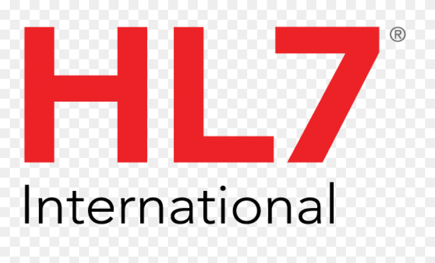
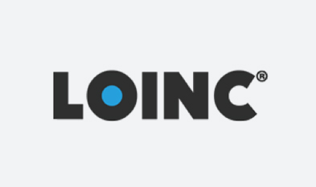
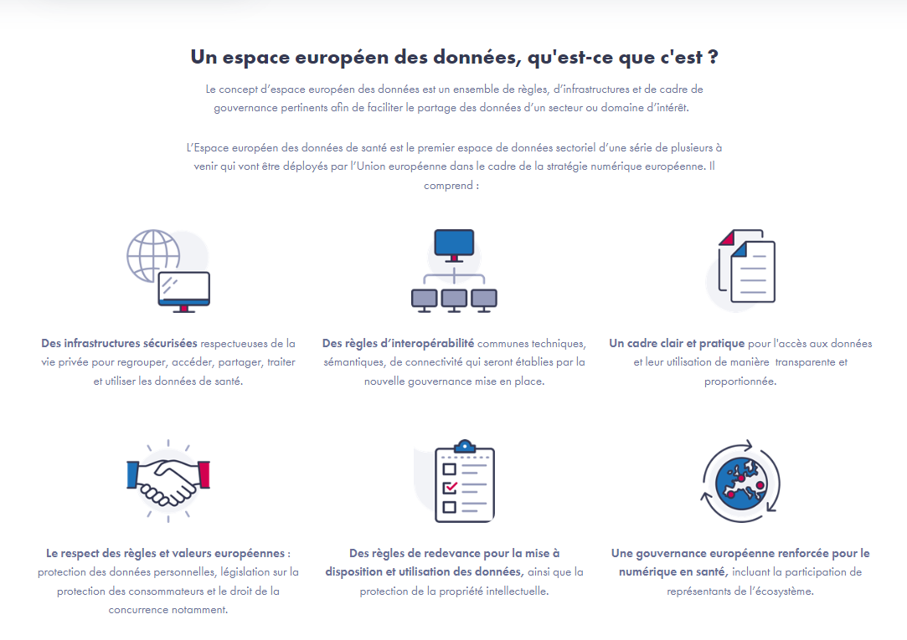

Définition:
L'Interopérabilité des systèmes de santé est la capacité de différentes structures de santé à communiquer et à échanger des informations et des données entre elles, sans encombre et sans perte d'intégrité des données,
et ceci même si elle sont écrites pour des buts différents, par des fabricants différents et dans des languages différents.
-
Pourquoi ce sujet ? :
Parce que le monde va de plus en plus vers la télémedecine, vers le partage de soins, et que donc les informations médicales doivent être accessibles depuis plusieurs endroits.
Parce que les DPI Dedalus font partie des logiciels Certifiés Segur compatibles,
Parce que rendre les données interopérables c'est améliorer et accélerer le processus de soins pour plusieurs patients.
-
Mes Outils de veille :
-
L'Agence Nationale pour le Numérique en Santé, et leur newsLetter mensuelle.
-
Le site web Interop'santé, ressence les dernières publications sur le sujet, et regroupe les pricipaux acteurs en France de l'Interopérabilité.
-
Le site Web heathCareIT, qui regroupe les dernières informations et nouveautés mondiales sur le la e-santé, mais qui possède quand même une rubrique dédiée à l'Interopérabilité.
-
Les différentes normes d'Interopérabilité
Il en existe plusieurs, mais on va citer les plus connues, et les plus utilisées:
-
Les normes FIHR (Fast Healthcare Interoperability Resources) HL7

Utilisées pour les données cliniques et administratives du parcours de soins.
Cette nomenclature s'appuis sur des ressources,pour représenter les données de santé. Chaque ressource correspond à un concept spécifique, comme un patient, une observation ou un médicament. Ces ressources peuvent être combinées et étendues pour supporter divers scénarios de santé.
Cette norme est très étendue car elle est compatible avec les API REST, et supporte plusieurs formats de données, tout comme le JSON ou le Xml.
-
Les normes LOINC (Logical Observation Identifiers Names and Codes)

Cette nomenclature est surtout utilisée pour le codage des résultats de laboratoires, elle est adoptée dans 49 pays, dont la France.
-
Les normes DICOM (Digital Imaging and Communications in Medicine) :
DICOM est une norme utilisée pour la transmission, le stockage et la communication des images médicales, telles que les radiographies, les IRM et les échographies.
Nouveautés :
Adoption du réglement Européen des Données de santé
Le but de cet espace Européen est de pouvoir soigner les citoyens des 27 pays membres ou qu'ils soient.
Il passe bien sûre par l'adoption de règles communes de nomenclatures et de sémantique.
